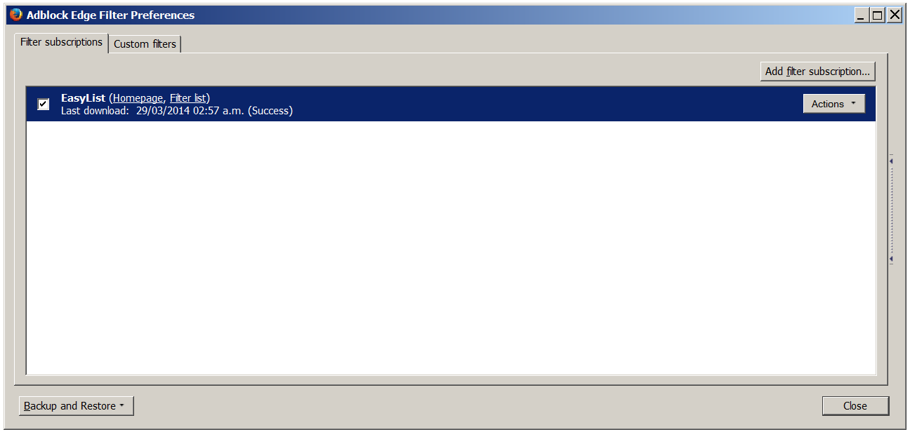
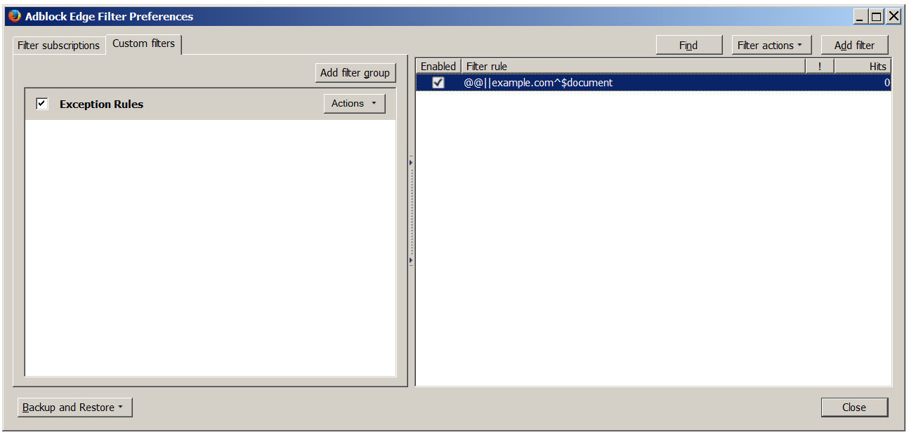

Troubleshooting
- I (accidentally) blocked something. How can I unblock it again?
- I have Adblock Edge but I am still getting ads! Why?
I (accidentally) blocked something. How can I unblock
it again?
In Firefox:
- Select Firefox >> Add-ons (for Mac OS X / Linux, select
"Tools" from the menubar >> "Add-Ons"), this will open your
Firefox Add-ons Manager.
- Click on "Extensions", find Adblock Edge there, go to "Options"
and then click on "Filter preferences...".
- At the top you will see the "Custom filters" tab where you find
your own filters in filter groups.
- Right-click a group and choose "Show/hide filters" and this will
show you the custom filters.
- Remove the respective filters from the right window. This should
unblock the desired element again.
I have Adblock Edge but I am still getting ads!
Why?
Make sure Adblock Edge is enabled.
In Firefox:
Select Firefox >> Add-ons (for Mac OS X / Linux, select
"Tools" from the menubar >> "Add-Ons"), this will open your
Firefox Add-ons Manager. Click on "Extensions", find Adblock Edge
there, go to "Options" and then ensure "Disable everywhere" is
unchecked.
In Chrome:
Click the Chrome menu button, then go to "Tools" and choose
"Extensions". Find Adblock Edge there and ensure "Enabled" is ticked
on the right.
In Opera:
Click the "Menu" button (for Mac OS X / Linux, "Tools"), select
"Extensions" >> "Manage Extensions". Find Adblock Edge there and
ensure it is not greyed-out and enabled.
Make sure you are subscribed to a filter subscription.
In Firefox:
- In Firefox select Firefox >> Add-ons (for Mac OS X / Linux,
select "Tools" from the menubar >> "Add-Ons"), this will open
your Firefox Add-ons Manager.
- Click on "Extensions", find Adblock Edge there, go to "Options"
and click on "Filter preferences...".
- Ensure there is a filter subscription ("EasyList" or "Fanboy's
Adblock List") that is enabled (ticked):

Make sure Adblock Edge does not whitelist the website.
In Firefox:
- Select Firefox >> Add-ons (for Mac OS X / Linux, select
"Tools" from the menubar >> "Add-Ons"), this will open your
Firefox Add-ons Manager.
- Click on "Extensions", find Adblock Edge there, go to "Options"
and click on "Filter preferences...".
- Go to the "Custom filters" tab on the top, right-click "Exception
Rules" (if it is there) and choose "Show/hide filters".
- Ensure the right window does not contain any sites you do not
want to see ads on:

I did all previous steps but I am still getting ads!
It could be that a malicious extension in your browser injects ads
into webpages. Please read
this guide how to detect such extensions and get rid of them.
Sometimes resetting
Firefox works wonders.